Code
import pandas as pd
import numpy as np
import matplotlib.pyplot as plt
import seaborn as sns
RANDOM_STATE = 123The previous two chapters turned a raw tables into a clean, model-ready basetable. The obvious next step is to fit a model to it. Before that’s worth doing, though, we need to answer a more basic question: how would we even properly set up an experiment and how would we know if the model is any good?
In CRISP-DM terms this is the evaluation phase, and it’s where most predictive modelling projects actually go wrong. The mistakes rarely happen in the modelling itself; they happen in the experimental setup, the way the data is split into parts for learning and for testing. Get that wrong and every performance number you report afterwards is fiction and unreliable.
This chapter covers the two things you need before you can trust a model:
import pandas as pd
import numpy as np
import matplotlib.pyplot as plt
import seaborn as sns
RANDOM_STATE = 123The single most important principle in predictive modelling is that a model must be evaluated on unseen data. Scoring a model on the same rows it was trained on is a self-fulfilling prophecy: it will look accurate because you’re checking patterns against the exact data those patterns were extracted from. If every elderly customer in the training data happened to churn, the model will “learn” that elderly customers churn, and score perfectly on that training data, whether or not the relationship is real. Only data the model has never touched can tell you whether a learned pattern generalizes well or not.
The fix is to split the available data into separate parts: one for learning the patterns, another for evaluating them. Several strategies exist for doing that, and the rest of this section works through them.
We’ll use a compact churn basetable with just four predictors: a monetary score, a transaction count, a recency score, and the number of days the customer has been active. This is an RFM plus length-of-relationship feature set, exactly the kind discussed in the previous chapter.
basetable = pd.read_csv("../data/processed/basetable.csv")
print(f"Dataset shape: {basetable.shape}")
print(f"Churn rate: {basetable['churn'].mean():.3f}")
basetable.head()Dataset shape: (41739, 5)
Churn rate: 0.038| Monetary_score | Total_quantity | recency_score | days_customer | churn | |
|---|---|---|---|---|---|
| 0 | 12519.0 | 715 | 16 | 15503 | 0 |
| 1 | 7315.2 | 309 | 36 | 16964 | 0 |
| 2 | 3267.8 | 176 | 15 | 22442 | 0 |
| 3 | 1289.0 | 74 | 21 | 16598 | 0 |
| 4 | 6789.0 | 390 | 1 | 15137 | 0 |
X = basetable.drop("churn", axis=1)
y = basetable["churn"]The simplest strategy is the holdout set: shuffle the data and split it once into a training set to learn from and a test set to evaluate on (Figure 6.1).
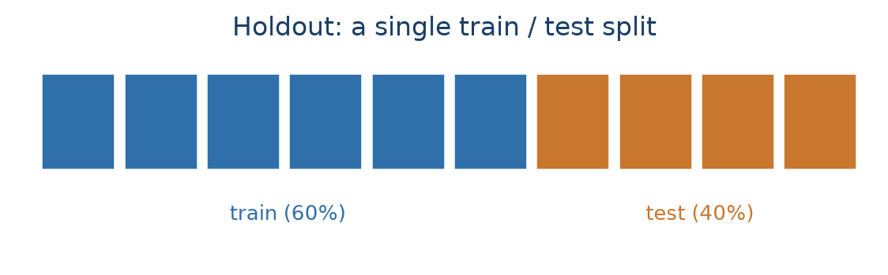
Two practical points. We use a 60/40 split: slightly more data in training (more training data generally means a better model) while still leaving a substantial test set. And we set a random state (seed) so the “random” sample is reproducible. That is essential while learning and debugging, so everyone gets the same split. stratify=y keeps the churn rate the same in both sets, which matters when the positive class is rare.
from sklearn.model_selection import train_test_split
X_train, X_test, y_train, y_test = train_test_split(
X, y, test_size=0.4, random_state=RANDOM_STATE, stratify=y
)
print(f"Training set: {X_train.shape[0]} rows ({X_train.shape[0] / len(X):.0%})")
print(f"Test set: {X_test.shape[0]} rows ({X_test.shape[0] / len(X):.0%})")
print(f"Churn rate, train: {y_train.mean():.3f}, test: {y_test.mean():.3f}")Training set: 25043 rows (60%)
Test set: 16696 rows (40%)
Churn rate, train: 0.038, test: 0.038There is no universal rule for how much data to hold out. This book uses a 60/40 split, but 70/30 and 80/20 are also common, and scikit-learn’s own train_test_split defaults to a 75/25 split when test_size and train_size are both left unspecified. The choice is a direct trade-off, not a fixed convention: a bigger training set gives the model more to learn from and lowers its bias, while a bigger test set gives a less variable, more trustworthy estimate of how well it actually performs (James et al. 2013). With a small or moderately sized dataset, protecting the test-set estimate a bit more, as with a 60/40 split, is a reasonable choice.
The holdout set is simple and works well on large samples (roughly 10,000+ rows). Its weakness is that the test-set score depends on which rows happened to land in the test set: a different random split can give a meaningfully different number.
As soon as you compare several models or fine-tune hyperparameter set tings, a plain train/test split isn’t enough. If you evaluate many candidate models on the test set and keep the best, you’ve effectively tuned to that specific test set (also called test-set torturing) and its score is no longer an honest estimate of future performance.
The fix is a three-way split (Figure 6.2): a training set to fit models, a validation set to compare them and pick the winner, and a test set that stays untouched until the very end for the best, final, unbiased measurement. We’ll use 60/20/20. In sklearn this takes two calls to train_test_split: first create the 20% test set, then split the remaining 80% into train (75% of 80% = 60%) and validation (25% of 80% = 20%).
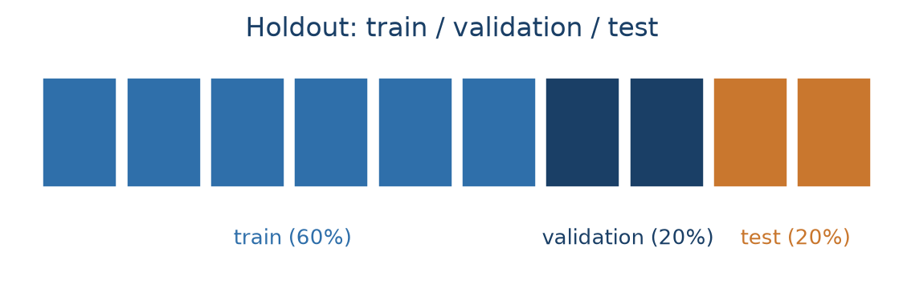
X_temp, X_test, y_temp, y_test = train_test_split(
X, y, test_size=0.2, random_state=RANDOM_STATE, stratify=y
)
X_train, X_val, y_train, y_val = train_test_split(
X_temp, y_temp, test_size=0.25, random_state=RANDOM_STATE, stratify=y_temp
)
print(f"Train: {len(X_train)} | Validation: {len(X_val)} | Test: {len(X_test)}")Train: 25043 | Validation: 8348 | Test: 8348All data preparation belongs on the training set. Bin width, imputation values, scaling statistics, encodings: everything gets fitted from training data only, then applied or transformed unchanged to validation and test. Fitting a scaler or an imputer on the full dataset leaks information about the test rows into the model and makes the model overly optimistic.
Never merge the validation and test sets. It’s fine (and recommended) to combine train + validation to refit the final model once the hyperparameter is chosen (albeit not needed if the training set is sufficiently big). The test set stays separate.
To make this concrete, let’s tune one hyperparameter of a K-nearest-neighbours (KNN) classifier. KNN classifies an observation by finding the K most similar observations in the training data (by Euclidean distance) and taking a majority vote. K is a hyperparameter: it controls the model’s behaviour but isn’t estimated from the data the way a regression coefficient is, so we have to choose it ourselves by trying several values.
Because KNN uses distances, all features must be on the same scale, so we wrap a StandardScaler and the classifier in a pipeline, which guarantees the scaler is fit on training data only and the same transformation is reapplied to every other set. We score each K by AUC on the validation set (AUC is covered later in this chapter; for now, read it as “higher is better, 0.5 is random”).
from sklearn.neighbors import KNeighborsClassifier
from sklearn.preprocessing import StandardScaler
from sklearn.pipeline import Pipeline
from sklearn.metrics import roc_auc_score
k_values = [3, 5, 10, 15, 20, 30, 50]
validation_scores = []
for k in k_values:
pipeline = Pipeline([
("scaler", StandardScaler()),
("classifier", KNeighborsClassifier(n_neighbors=k)),
])
pipeline.fit(X_train, y_train)
val_probs = pipeline.predict_proba(X_val)[:, 1]
validation_scores.append(roc_auc_score(y_val, val_probs))
print(f"K={k:2d}: validation AUC = {validation_scores[-1]:.4f}")
plt.figure(figsize=(8, 4))
plt.plot(k_values, validation_scores, "o-", color="#2f6faa")
plt.xlabel("Number of neighbours (K)")
plt.ylabel("Validation AUC")
plt.title("KNN performance vs. K")
plt.grid(alpha=0.3)
plt.show()K= 3: validation AUC = 0.6056
K= 5: validation AUC = 0.6307
K=10: validation AUC = 0.6579
K=15: validation AUC = 0.6783
K=20: validation AUC = 0.6912
K=30: validation AUC = 0.7222
K=50: validation AUC = 0.7377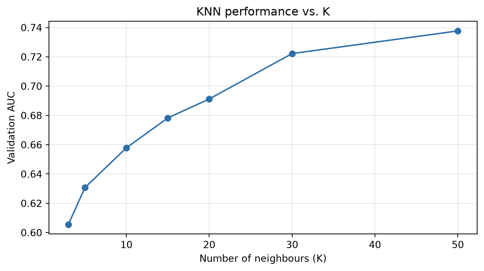
Once the best K is identified on the validation set, we combine train + validation, refit the final model on all of it, and touch the test set exactly once:
best_k = k_values[int(np.argmax(validation_scores))]
best_val_score = max(validation_scores)
X_train_full = pd.concat([X_train, X_val])
y_train_full = pd.concat([y_train, y_val])
final_pipeline = Pipeline([
("scaler", StandardScaler()),
("classifier", KNeighborsClassifier(n_neighbors=best_k)),
])
final_pipeline.fit(X_train_full, y_train_full)
test_probs = final_pipeline.predict_proba(X_test)[:, 1]
test_auc = roc_auc_score(y_test, test_probs)
print(f"Best K = {best_k} (validation AUC {best_val_score:.4f})")
print(f"Final test AUC: {test_auc:.4f}")Best K = 50 (validation AUC 0.7377)
Final test AUC: 0.7439The small gap between validation and test AUC is normal. It’s the natural variation between two different random samples of the same data.
A single train/validation split has the same weakness as a single holdout: the score depends on which rows landed where. Cross-validation (CV) averages that variation away. The data is cut into K equally sized folds; each fold serves as the test set exactly once while the other K−1 folds train the model, giving K scores that get averaged (Figure 6.3). 10-fold CV is the most common choice in practice; but K = 5 is also a good compromise between reliable estimates and computation time.
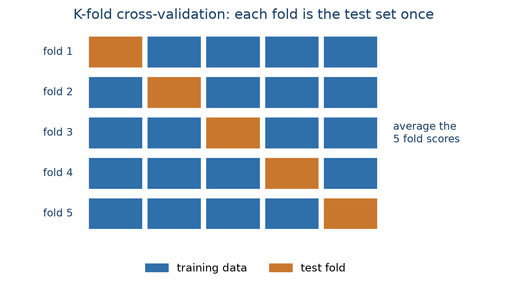
sklearn’s cross_validate handles all the splitting, fitting, and scoring internally. Here we run it with a fixed KNN (K = 50) just to see how much a single split can vary. This is sometimes called the big outer loop: cross-validation used only to estimate final performance, with no hyperparameter tuning. We’ll reuse this exact K-fold strategy twice more below: first as the tuning mechanism inside a search, then wrapped around that search. The “Nested cross-validation” section further down names these three roles precisely.
from sklearn.model_selection import cross_validate, KFold
pipeline_cv = Pipeline([
("scaler", StandardScaler()),
("classifier", KNeighborsClassifier(n_neighbors=50)),
])
kfold = KFold(n_splits=10, shuffle=True, random_state=RANDOM_STATE)
cv_results = cross_validate(pipeline_cv, X, y, cv=kfold, scoring="roc_auc")
cv_scores = cv_results["test_score"]
test_auc_cv = cv_scores.mean()
plt.figure(figsize=(9, 4))
plt.plot(range(1, 11), cv_scores, "o-", color="#2f6faa")
plt.axhline(test_auc_cv, color="#c9772e", ls="--", label=f"Mean: {test_auc_cv:.4f}")
plt.xlabel("Fold")
plt.ylabel("AUC")
plt.title("10-fold cross-validation: AUC varies fold to fold (K=50)")
plt.legend()
plt.grid(alpha=0.3)
plt.show()
print(f"AUC ranges from {cv_scores.min():.4f} to {cv_scores.max():.4f}; mean {test_auc_cv:.4f}")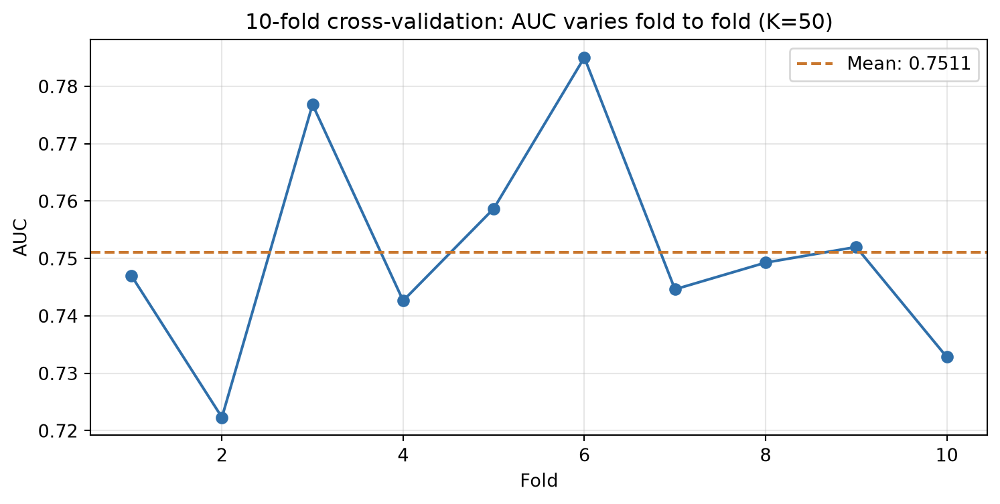
AUC ranges from 0.7223 to 0.7850; mean 0.7511In sklearn, GridSearchCV automates the inner train/validation loop: you give it a pipeline, a grid of hyperparameter values, and a CV strategy, and it fits every combination, scores it by cross-validation within the training set, keeps the best, and refits on the full training set, all without ever touching the test set.
The workflow becomes: split off a test set manually (the outer loop), let GridSearchCV do the validation splitting (the inner loop), and evaluate once on the test set at the end. This is less code, harder to get wrong, and needs no manual refitting.
A single holdout split for the outer loop, combined with full K-fold CV for the inner loop, is what’s called the big inner loop: cheaper than also repeating the outer split, and the usual choice in engineering and research settings, where getting the hyperparameter right matters more than polishing the final performance number and the test set is already large enough to be reliable.
Below we tune K for KNN, but this time with GridSearchCV. The scoring metric is AUC, and the inner CV loop is 10-fold. The final test set in the outer loop is already present with the existing 20% holdout, and only touched once at the very end.
from sklearn.model_selection import GridSearchCV
X_train, X_test, y_train, y_test = train_test_split(
X, y, test_size=0.2, random_state=RANDOM_STATE, stratify=y
)
pipeline = Pipeline([
("scaler", StandardScaler()),
("classifier", KNeighborsClassifier()),
])
param_grid = {"classifier__n_neighbors": [3, 5, 10, 15, 20, 30, 50]}
grid_search = GridSearchCV(
pipeline, param_grid, cv=kfold, scoring="roc_auc", n_jobs=-1
)
grid_search.fit(X_train, y_train)
test_probs_grid = grid_search.predict_proba(X_test)[:, 1]
test_auc_grid = roc_auc_score(y_test, test_probs_grid)
print(f"Best K = {grid_search.best_params_['classifier__n_neighbors']}")
print(f"Best CV AUC (mean of 10 folds): {grid_search.best_score_:.4f}")
print(f"Final test AUC: {test_auc_grid:.4f}")Best K = 50
Best CV AUC (mean of 10 folds): 0.7471
Final test AUC: 0.7439n_jobs=-1 tells GridSearchCV to use all CPU cores. The folds and hyperparameter settings are independent, so they run in parallel and the search finishes much faster on larger grids.
Above, GridSearchCV gives a robust hyperparameter estimate, but the final performance number still relies on one random train/test split. If that split happened to be favourable, the reported AUC is not representative of the model’s true performance.
Every example above is built from the same two roles, combined differently:
Cross-validation can play either role, or both at once, which gives potential setups:
GridSearchCV example above. Common in engineering and research settings, where the hyperparameter search matters more than a polished final estimate.Hence, fully nested cross-validation is the fully nested setup and it removes the last dependence on a single lucky split by running CV at two levels:
GridSearchCV with 10-fold CV) that tunes the hyperparameter separately inside each outer training fold.Figure 6.4 draws this fully nested setup with 5-fold CV at both levels instead of 10. This makes it easier to visualize since each fold is larger. However, the logic remains identical for any K.
![Top: a row of five blocks, four blue (outer training data) and one orange (outer test fold), with a bracket and arrow pointing down from the training blocks, labelled one of 5 outer folds. Bottom: three of five rows of five blocks showing the inner 5-fold CV run only on that training data, one block per row in dark navy (the inner validation fold) and the rest blue (inner training data), with a note that inner scores are averaged to pick the hyperparameter before a final score on the outer test fold. A subtitle notes the same idea works for any K, e.g. 10-fold.](../images/ch06-fig-nested.png)
The code below uses 10-fold at both levels, matching the rest of the chapter. The result is 10 performance estimates instead of one, which gives a mean, a standard deviation, and a confidence interval, and no single lucky split can distort it. The cost is computation: 10 × 10 × 7 = 700 model fits instead of 70. As a rule of thumb, academic work favours fully nested CV for maximum rigour; industry usually settles for the big inner loop (GridSearchCV, inner CV only) for speed.
nested_results = cross_validate(grid_search, X, y, cv=kfold, scoring="roc_auc", n_jobs=1)
nested_scores = nested_results["test_score"]
test_auc_nested = nested_scores.mean()
print(f"Mean AUC across 10 outer folds: {test_auc_nested:.4f}")
print(f"Standard deviation: {nested_scores.std():.4f}")
lo, hi = test_auc_nested - 1.96 * nested_scores.std(), test_auc_nested + 1.96 * nested_scores.std()
print(f"95% confidence interval: [{lo:.4f}, {hi:.4f}]")Mean AUC across 10 outer folds: 0.7511
Standard deviation: 0.0178
95% confidence interval: [0.7163, 0.7860]Here the nested-CV mean lands almost exactly on the plain outer-loop mean from before, because K = 50 really is the best setting for this data, so tuning inside each fold keeps picking it. On a problem where the best hyperparameter is genuinely unknown (which is often the case with more complex models), the two would diverge, and the nested estimate would be the trustworthy one.
Leave-one-out cross-validation (LOOCV) is K-fold CV taken to its extreme: K equals the number of rows, so each model trains on all data but one row and is tested on that single left-out row (Figure 6.5). It uses almost all the data for training every time, but it needs n model fits, which is impractical for anything but tiny datasets, and the per-fold test score (right or wrong on one row) is extremely noisy.
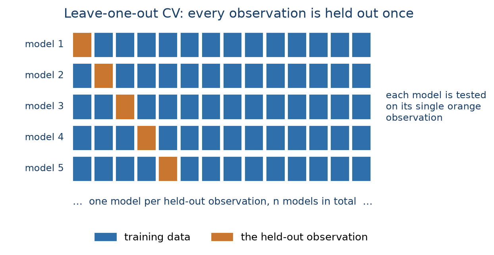
We demonstrate it on a 500-row stratified subsample to keep the runtime reasonable:
from sklearn.model_selection import LeaveOneOut
X_small, _, y_small, _ = train_test_split(
X, y, train_size=500, random_state=RANDOM_STATE, stratify=y
)
loo = LeaveOneOut()
loo_preds, loo_true = [], []
for train_idx, test_idx in loo.split(X_small):
pipeline_cv.fit(X_small.iloc[train_idx], y_small.iloc[train_idx])
loo_preds.append(pipeline_cv.predict_proba(X_small.iloc[test_idx])[0, 1])
loo_true.append(y_small.iloc[test_idx].iloc[0])
loocv_auc = roc_auc_score(loo_true, loo_preds)
print(f"LOOCV AUC ({len(y_small)} fits): {loocv_auc:.4f}")LOOCV AUC (500 fits): 0.6287The lower AUC here isn’t LOOCV being “wrong”: it’s the much smaller training set (499 rows, only a handful of churners per fit) doing worse than the models trained on tens of thousands of rows. LOOCV is really only worth it for final evaluation on very small datasets.
The bootstrap builds a training set by sampling n rows with replacement from the data, so some rows appear multiple times and, on average, about 36.8% never get drawn at all. Those unused rows form the out-of-bag (OOB) test set. Repeating this many times gives a distribution of scores, much like CV, but with training sets that stay the original size. Note that the bootstrap was mainly designed as a statistical resampling technique, not a true model evaluation method, so it is less common in practice than CV. sklearn has no built-in bootstrap splitter, so we use resample:
from sklearn.utils import resample
boot_scores = []
for i in range(50):
X_boot, y_boot = resample(X, y, n_samples=len(X), random_state=RANDOM_STATE + i, stratify=y)
oob_idx = X.index.difference(X_boot.index)
pipeline_cv.fit(X_boot, y_boot)
oob_probs = pipeline_cv.predict_proba(X.loc[oob_idx])[:, 1]
boot_scores.append(roc_auc_score(y.loc[oob_idx], oob_probs))
boot_scores = np.array(boot_scores)
print(f"Bootstrap AUC: {boot_scores.mean():.4f} ± {boot_scores.std():.4f} (50 iterations)")Bootstrap AUC: 0.7254 ± 0.0114 (50 iterations)methods = ["Holdout\n(3-way)", "Big outer loop\n(10-fold)", "Big inner loop\n(GridSearchCV)", "Fully nested\nCV", "LOOCV\n(500)", "Bootstrap\n(50)"]
scores = [test_auc, test_auc_cv, test_auc_grid, test_auc_nested, loocv_auc, boot_scores.mean()]
plt.figure(figsize=(9, 4))
bars = plt.bar(methods, scores, color="#2f6faa", alpha=0.85)
for bar, s in zip(bars, scores):
plt.text(bar.get_x() + bar.get_width() / 2, bar.get_height() + 0.004, f"{s:.3f}",
ha="center", fontsize=9)
plt.ylabel("AUC")
plt.title("The resampling strategies give similar answers here")
plt.ylim(min(scores) - 0.03, max(scores) + 0.03)
plt.xticks(fontsize=8)
plt.tight_layout()
plt.show()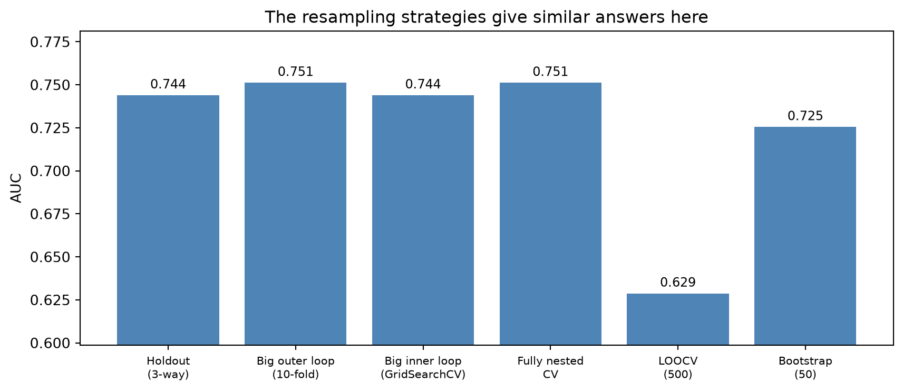
For this dataset every strategy lands around AUC 0.74 to 0.75, which is itself reassuring: it means the model is stable and not sensitive to how the data is split. In general:
GridSearchCV, inner CV only) gives reliable hyperparameter choices at a fraction of the cost, and is the usual industry choice. Works well when the test set is large enough to be trustworthy.sklearn.Almost every broken experimental setup comes down to the same root cause: data leakage. This is information from outside the training set (especially information about the target, about the future or the test data) sneaking into the model. The model then “learns” things it could not possibly know at prediction time, its measured performance is inflated, and its performances collapses on genuinely new data (Kaufman et al. 2012).
Leakage is fundamentally about legitimacy: which inputs would actually be available, and accurate, at the moment you’d want a prediction. Three rules capture most of it:
Some classic examples:
You have 5,000 rows and 500 variables. To fight the curse of dimensionality, you run variable selection on the full dataset to get down to 100 variables, then cross-validate a classifier on those 100.
This is a classical example of data leakage. The variable selection step already looked or peeked at every row’s label, including the rows that later act as CV test folds, and chose features because they correlated with those labels. Cross-validating afterwards can’t undo that; on the contrary, each fold is now contaminated with information from the test set and the folds were never truly unseen. The key lesson here is that feature selection is part of training and must happen inside each CV fold, on the training portion only.
How do you detect it? Performance that looks too good-to-be-true, is also often not true. For example, a churn model with AUC 0.99 should raise suspicion before celebration. A large drop in performance once the model meets a genuinely new batch of data, for example next month’s customers, should also raise suspicion. That drop is leakage showing itself: the model looked great on data it had secretly already seen, and it collapses once it can no longer cheat.
How do you prevent it?
sklearn, a Pipeline passed to cross_validate or GridSearchCV does exactly this automatically.Choosing a model’s complexity (e.g., how many features, what polynomial degree, how many parameters) is a balancing act between two kinds of error (Figure 6.6):
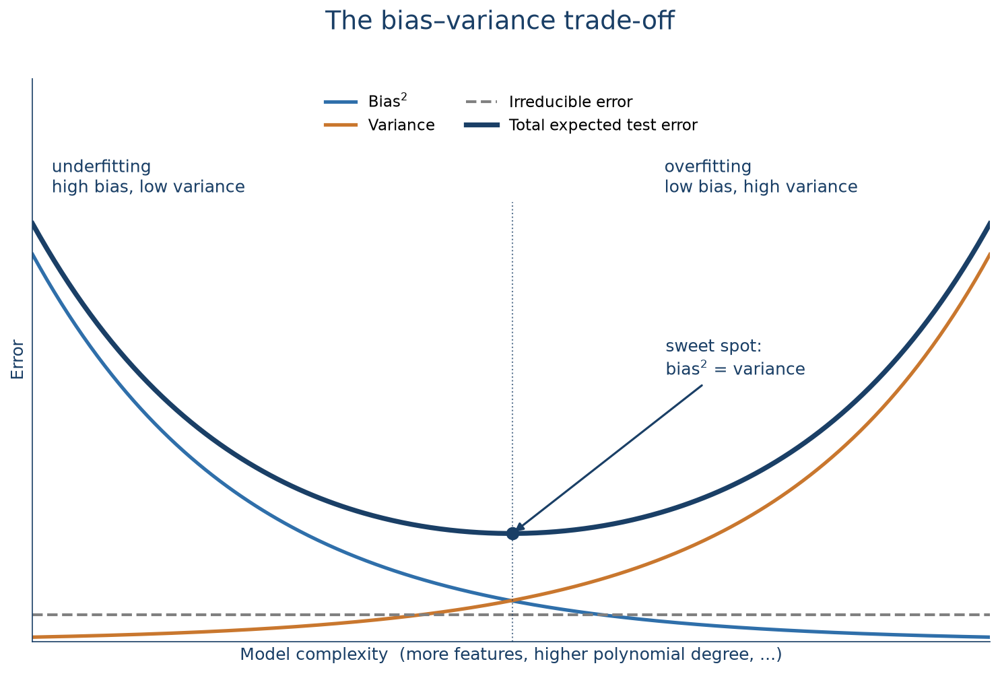
Expected test error is roughly bias² + variance + an irreducible noise floor you can never beat. Lowering one of the first two tends to raise the other, so there’s an optimal complexity where the total error is smallest. Increasing complexity beyond this (more variables, comples transformations trees) makes things worse, not better (James et al. 2013).
The synthetic example below shows things clearer. We generate data from a known quadratic relationship plus noise, then fit three models of increasing complexity:
from sklearn.linear_model import LinearRegression
from sklearn.preprocessing import PolynomialFeatures
from sklearn.metrics import r2_score
np.random.seed(RANDOM_STATE)
x = np.arange(-50, 151)
y_true = 3 + 2 * x**2
y_noisy = y_true + np.random.normal(0, 4000, len(x))
def fit_poly(degree):
Xp = PolynomialFeatures(degree=degree, include_bias=False).fit_transform(x.reshape(-1, 1))
model = LinearRegression().fit(Xp, y_noisy)
return model.predict(Xp)
pred_linear = fit_poly(1)
pred_quad = fit_poly(2)
pred_poly20 = fit_poly(20)
fig, ax = plt.subplots(figsize=(9, 5))
ax.scatter(x, y_noisy, s=15, color="#999999", alpha=0.6, label="Data")
ax.plot(x, pred_linear, color="#c9772e", lw=2, label=f"Linear: underfit (R²={r2_score(y_noisy, pred_linear):.3f})")
ax.plot(x, pred_poly20, color="#2f6faa", lw=2, label=f"Degree 20: overfit (R²={r2_score(y_noisy, pred_poly20):.3f})")
ax.plot(x, pred_quad, color="#1a3f66", lw=3, label=f"Quadratic: just right (R²={r2_score(y_noisy, pred_quad):.3f})")
ax.set_xlabel("x")
ax.set_ylabel("y")
ax.set_title("Same data, three complexities")
ax.legend()
ax.grid(alpha=0.3)
plt.show()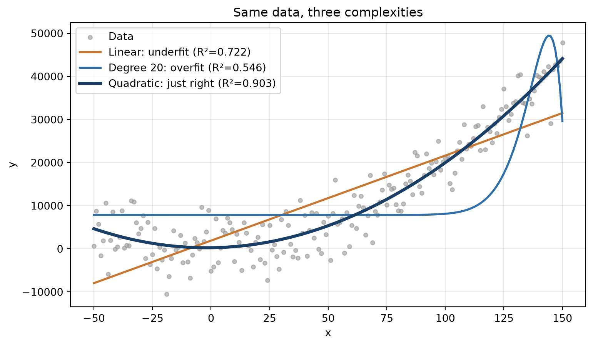
The linear model can’t bend to the curve at all (underfitting, high bias). The degree-20 polynomial wiggles to chase individual noisy points (overfitting, high variance). Note that its R² is higher than the quadratic’s on this data, which is exactly why R² on the training data you fit is a poor guide to a model’s real quality. The quadratic matches the true relationship and will generalise best to new data, even if its R² is lower on this particular training sample.
The demonstration above was easy because we knew the true relationship. In practice you don’t, which is why you need evaluation metrics, computed on a proper held-out set, to compare models and pick one.
Remember that a regression model doesn’t output a class label, it outputs a point estimate: a single predicted number \(\hat{y}\) for each unknown value \(y\). Evaluating the model means comparing these predictions to the actual values on a held-out set: the closer \(\hat{y}\) sits to \(y\) across all test rows, the better the model. There is no single “right” way to summarise that closeness, different metrics have their own strengths and weaknesses (e.g., how to weigh large errors, outliers, and scale differently) so it’s common to look at several at once.
Four metrics cover most needs:
Only R² is maximised; the rest are minimised.
To make this concrete, let’s consdider a synthetic time series example: x is a time index, y is profit in that period, and we want to predict future profit. We split it chronologically rather than randomly (for a time series, the validation and test set must be the later periods): 60% train, 20% validation, 20% test. Then we compare a linear, a quadratic, and a high-order polynomial fit.
reg = pd.DataFrame({"x": x, "x2": x**2, "x4": x**4, "x5": x**5, "y": y_noisy})
train, val, test = reg.iloc[:121], reg.iloc[121:161], reg.iloc[161:]
linear_reg = LinearRegression().fit(train[["x"]], train["y"])
quad_reg = LinearRegression().fit(train[["x", "x2"]], train["y"])
poly_reg = LinearRegression().fit(train[["x4", "x5"]], train["y"])
val_pred = {
"Linear": linear_reg.predict(val[["x"]]),
"Quadratic": quad_reg.predict(val[["x", "x2"]]),
"High-order poly": poly_reg.predict(val[["x4", "x5"]]),
}Scoring the three candidate models on the validation set:
from sklearn.metrics import mean_squared_error, mean_absolute_error
def mape(y_true, y_pred):
return np.mean(np.abs((y_true - y_pred) / y_true))
rows = []
for name, pred in val_pred.items():
rows.append({
"Model": name,
"R²": r2_score(val["y"], pred),
"RMSE": np.sqrt(mean_squared_error(val["y"], pred)),
"MAE": mean_absolute_error(val["y"], pred),
"MAPE": mape(val["y"], pred),
})
pd.DataFrame(rows).round(3)| Model | R² | RMSE | MAE | MAPE | |
|---|---|---|---|---|---|
| 0 | Linear | -4.864 | 12320.046 | 11360.358 | 0.635 |
| 1 | Quadratic | 0.368 | 4045.516 | 3354.931 | 0.193 |
| 2 | High-order poly | -3.158 | 10374.303 | 8295.971 | 0.492 |
The quadratic model wins on every metric. The linear model underfits: it systematically underestimates the high values. The high-order polynomial overfits, producing poor predictions off the training range. Refitting the quadratic on train + validation and scoring once on the test set gives the final number:
final_model = LinearRegression().fit(
pd.concat([train, val])[["x", "x2"]], pd.concat([train, val])["y"]
)
test_pred = final_model.predict(test[["x", "x2"]])
print("Final quadratic model, test set:")
print(f" R² = {r2_score(test['y'], test_pred):.3f}")
print(f" RMSE = {np.sqrt(mean_squared_error(test['y'], test_pred)):,.0f}")
print(f" MAE = {mean_absolute_error(test['y'], test_pred):,.0f}")
print(f" MAPE = {mape(test['y'], test_pred):.3f}")Final quadratic model, test set:
R² = 0.683
RMSE = 3,666
MAE = 2,493
MAPE = 0.080Classification needs different evaluation metrics: you can’t average an “error” when every prediction is either exactly right (1–1 or 0–0) or exactly wrong.
We switch back to the churn basetable, take a fresh 50/50 split (so the test set is large enough for stable metrics), and fit a random forest model. Random forests build hundreds of decision trees and average them; they’re one of the best off-the-shelf classifiers even without tuning. You don’t have to know the details of this model, but just see it as a good performing default model. Here the random forest is just a means to generate predictions to evaluate.
from sklearn.ensemble import RandomForestClassifier
X_clf = basetable.drop("churn", axis=1)
y_clf = basetable["churn"]
X_tr, X_te, y_tr, y_te = train_test_split(
X_clf, y_clf, test_size=0.5, random_state=RANDOM_STATE, stratify=y_clf
)
rf = RandomForestClassifier(n_estimators=100, random_state=RANDOM_STATE)
rf.fit(X_tr, y_tr)
y_proba = rf.predict_proba(X_te)[:, 1]Before looking at any metric, it helps to be clear about what a classifier actually returns, because that’s what the rest of this section relies on (Hernández-Orallo et al. 2012). There are two kinds:
Most models used in practice, including random forests, logistic regression, and gradient boosting, are scoring classifiers. Random forest above is no exception: rf.predict_proba gives its raw scores, y_proba, and rf.predict is simply what you get after applying sklearn’s default cut-off of 0.5 to those same scores (a probability of exactly 0.5 is the one edge case that rounds down to 0).
This book, like most of sklearn’s documentation, calls a scoring classifier’s output a “probability.” In practice, the raw score a model outputs is often not a genuine probability: many popular classifiers are known to be poorly calibrated out of the box (Niculescu-Mizil and Caruana 2005). A classifier is well-calibrated if, for example, 80% of the instances to which it assigns a 80% probability are actually members of that class. So a score of 0.8 across a group of customers should mean that roughly 80% of them actually churn, which for most raw model outputs isn’t true. Turning a raw score into something that behaves like a real probability takes an extra step, calibration, or more rigorously, conformal prediction (Manokhin 2023), which is a topic on its own and beyond the scope of this book. But it is worth keeping in mind that the “probabilities” you see here are not guaranteed to be probabilities in the strict sense and a purist would call them “scores” instead.
Both kinds of classifier can be evaluated with the same starting point: the confusion matrix, a cross-tabulation of actual versus predicted labels. For a deterministic classifier that’s the whole story; for a scoring classifier, the matrix (and therefore everything built on it) still depends on which cut-off you chose.
That split runs through everything that follows. Threshold-dependent metrics, like accuracy, precision, recall, and the rest, are computed from the confusion matrix at one specific cut-off. Threshold-independent metrics, ROC and AUC, precision-recall curves, lift, look instead at how a scoring classifier performs across every possible cut-off at once. We cover the threshold-dependent metrics first, then move on to the threshold-independent ones.
The confusion matrix at a chosen threshold has four cells: true positives (tp) and true negatives (tn), false positives (fp, predicted churn, when the customer did not: a type I error) and false negatives (fn, missed a churner: a type II error).
Almost every threshold-dependent metric is just a different ratio of these four counts:
\[ \text{Accuracy} = \frac{TP + TN}{TP + TN + FP + FN} \qquad\qquad \text{Precision} = \frac{TP}{TP + FP} \]
\[ \text{Recall (Sensitivity, TPR)} = \frac{TP}{TP + FN} \qquad\qquad \text{Specificity (TNR)} = \frac{TN}{TN + FP} \]
\[ \text{FNR (miss rate)} = \frac{FN}{TP + FN} = 1 - \text{Recall} \qquad\qquad F_1 = 2 \cdot \frac{\text{Precision} \cdot \text{Recall}}{\text{Precision} + \text{Recall}} \]
Recall and specificity each look at one actual class: of actual churners, how many did we catch (recall), and of actual non-churners, how many did we correctly clear (specificity, also called the true negative rate, TNR). Their complements are exactly the two error rates marked on the confusion matrix above: 1 minus recall is the FNR, the type II error rate, and 1 minus specificity is the false positive rate (FPR), the type I error rate. Precision instead looks at the predictions themselves: of everyone flagged as a churner, how many actually were one.
Two more metrics are built specifically for imbalanced data, where the positive class is rare:
\[ \text{Balanced accuracy} = \frac{\text{Recall} + \text{Specificity}}{2} \qquad\qquad F_\beta = (1 + \beta^2) \cdot \frac{\text{Precision} \cdot \text{Recall}}{(\beta^2 \cdot \text{Precision}) + \text{Recall}} \]
Balanced accuracy averages the per-class accuracies instead of counting rows: a model that just predicts the majority class gets 50% here, not the inflated number plain accuracy would give it, because a large majority class can no longer hide a near-zero recall on the minority class. \(F_\beta\) generalises \(F_1\) (the special case \(\beta = 1\)) to let you weight the two error types by how much they actually cost: \(\beta > 1\) weights recall more heavily, appropriate when missing a churner is worse than a false alarm; \(\beta < 1\) weights precision more, when a false alarm is the more expensive mistake.
Let’s see these metrics in action on the random forest model above, at the default 0.5 threshold:
from sklearn.metrics import (confusion_matrix, accuracy_score, precision_score,
recall_score, f1_score, balanced_accuracy_score, fbeta_score)
y_pred = rf.predict(X_te)
cm = confusion_matrix(y_te, y_pred)
fig, ax = plt.subplots(figsize=(5, 4))
sns.heatmap(cm, annot=True, fmt="d", cmap="Blues", cbar=False,
xticklabels=["No churn", "Churn"], yticklabels=["No churn", "Churn"], ax=ax)
ax.set_xlabel("Predicted")
ax.set_ylabel("Actual")
ax.set_title("Confusion matrix (threshold = 0.5)")
plt.show()
tn, fp, fn, tp = cm.ravel()
print(f"Accuracy: {accuracy_score(y_te, y_pred):.4f}")
print(f"Balanced accuracy: {balanced_accuracy_score(y_te, y_pred):.4f}")
print(f"Precision: {precision_score(y_te, y_pred):.4f} (of predicted churners, how many churned)")
print(f"Recall: {recall_score(y_te, y_pred):.4f} (of actual churners, how many we caught)")
print(f"Specificity: {tn / (tn + fp):.4f} (of actual non-churners, how many we cleared)")
print(f"FNR: {fn / (fn + tp):.4f} (of actual churners, how many we missed)")
print(f"F1-score: {f1_score(y_te, y_pred):.4f} (harmonic mean of precision and recall)")
print(f"F2-score: {fbeta_score(y_te, y_pred, beta=2):.4f} (weights recall twice as much as precision)")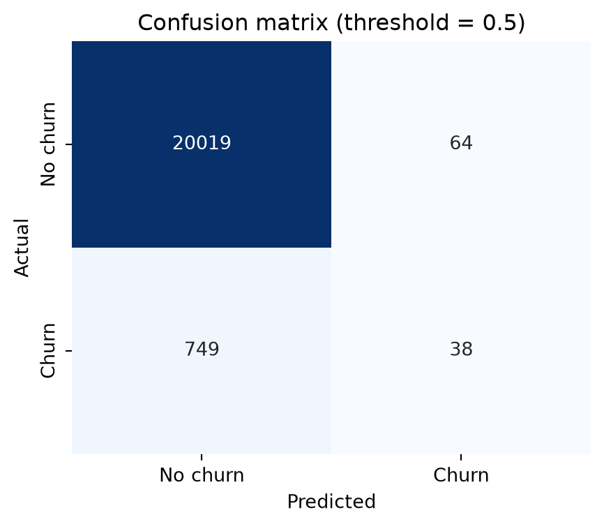
Accuracy: 0.9610
Balanced accuracy: 0.5225
Precision: 0.3725 (of predicted churners, how many churned)
Recall: 0.0483 (of actual churners, how many we caught)
Specificity: 0.9968 (of actual non-churners, how many we cleared)
FNR: 0.9517 (of actual churners, how many we missed)
F1-score: 0.0855 (harmonic mean of precision and recall)
F2-score: 0.0585 (weights recall twice as much as precision)The numbers show the classic failure mode on imbalanced data. Accuracy looks great at 96%, but that is almost entirely the 96% of customers who don’t churn: specificity is 99.7%, the model clears almost every non-churner. Balanced accuracy tells the true story: 52.3%, barely above the 50% coin flip, because it no longer lets the huge non-churn class hide the model’s near-zero recall. Recall itself confirms it: only 4.8% of actual churners are caught, an FNR above 95%. At a 0.5 threshold the model almost never predicts churn, because churn probabilities rarely climb above 0.5 when only ~4% of customers churn in the first place. Weighting recall more heavily makes this even more visible: F2 drops to 0.058, below F1’s already weak 0.086, because F2 punishes the missed churners harder than F1 does. Every one of these numbers depends on the threshold, which is exactly the weakness the next section addresses.
Let’s drop the threshold to 0.05 and the picture changes completely:
for t in [0.5, 0.05]:
yp = (y_proba >= t).astype(int)
tn, fp, fn, tp = confusion_matrix(y_te, yp).ravel()
print(f"threshold {t:>4}: recall {recall_score(y_te, yp):.3f} "
f"precision {precision_score(y_te, yp):.3f} "
f"specificity {tn / (tn + fp):.3f} FPR {fp / (fp + tn):.3f} "
f"FNR {fn / (fn + tp):.3f} accuracy {accuracy_score(y_te, yp):.3f}")threshold 0.5: recall 0.053 precision 0.382 specificity 0.997 FPR 0.003 FNR 0.947 accuracy 0.961
threshold 0.05: recall 0.615 precision 0.099 specificity 0.781 FPR 0.219 FNR 0.385 accuracy 0.775Recall jumps from 5% to 61%, and the FNR falls from 95% to 38%: three times as many churners caught. That comes at a real cost. The false-alarm rate is read directly off specificity: it drops from 99.7% to 78%, which is the same as saying the false positive rate (1 minus specificity) rises from 0.3% to 22%, so far more non-churners now get incorrectly flagged. Precision falls too, from 38% to 10%, but for a related, distinct reason: it’s not a rate over non-churners, it’s the fraction of flagged customers who actually churn, and that fraction drops because the flagged group now contains many more of those false alarms relative to the true churners it also catches. Which trade-off is right depends entirely on the business context: a retention campaign that’s cheap per contact can afford more false positives to catch more real churners; an expensive one-on-one intervention cannot.
A fixed cut-off like sklearn’s default of 0.5 quietly assumes two things that often aren’t true: that the classifier’s scores behave like well-calibrated probabilities (see the callout above), and that 0.5 happens to match what the business actually needs. Neither assumption is often the case. Comparing two classifiers at the same fixed cut-off can be misleading if their score distributions differ: one model’s recall can look like 0 and another’s clearly positive purely because their scores are scaled differently, not because one is genuinely worse. And even for a single well-behaved classifier, there is no reason 0.5 should be the cut-off a business actually wants to act on.
Three ways to pick a better one:
Solution 2 is simple enough to do by hand:
pos_rate = y_tr.mean()
cutoff_score = np.quantile(y_proba, 1 - pos_rate)
y_pred_pct = (y_proba >= cutoff_score).astype(int)
print(f"Training positive rate: {pos_rate:.3f}")
print(f"Score cut-off at that percentile: {cutoff_score:.3f}")
print(f" recall {recall_score(y_te, y_pred_pct):.3f}")
print(f" precision {precision_score(y_te, y_pred_pct):.3f}")
print(f" F1 {f1_score(y_te, y_pred_pct):.3f}")Training positive rate: 0.038
Score cut-off at that percentile: 0.230
recall 0.241
precision 0.233
F1 0.237Solution 3 does the same job more rigorously. TunedThresholdClassifierCV searches for the threshold that maximises a chosen metric, using internal cross-validation . For churn, F1 (balancing precision and recall) is a reasonable target. Note the use of StratifiedKFold: with imbalanced data you always want folds that preserve the class ratio.
from sklearn.model_selection import TunedThresholdClassifierCV, StratifiedKFold
tuned = TunedThresholdClassifierCV(
estimator=RandomForestClassifier(n_estimators=100, random_state=RANDOM_STATE),
scoring="f1",
cv=StratifiedKFold(n_splits=5, shuffle=True, random_state=RANDOM_STATE),
n_jobs=-1,
)
tuned.fit(X_tr, y_tr)
y_pred_tuned = tuned.predict(X_te)
print(f"F1-optimal threshold: {tuned.best_threshold_:.3f}")
print(f" recall {recall_score(y_te, y_pred_tuned):.3f}")
print(f" precision {precision_score(y_te, y_pred_tuned):.3f}")
print(f" F1 {f1_score(y_te, y_pred_tuned):.3f} (was {f1_score(y_te, y_pred):.3f} at 0.5)")F1-optimal threshold: 0.207
recall 0.267
precision 0.221
F1 0.242 (was 0.085 at 0.5)The two solutions land in a similar place here: F1 around 0.24 either way, a real improvement over the 0.085 the default 0.5 cut-off gave, but still modest in absolute terms. Threshold tuning merely repositions the operating point; it doesn’t make a weak classifier strong. Genuinely fixing imbalanced-class performance needs resampling, cost-sensitive learning, a stronger model or a combination of these, which are all beyond the scope of this book.
Often you don’t know the operating conditions at evaluation time. For a retention campaign, the marketing budget, and so the fraction of customers you can target, may not be decided yet. Threshold-independent metrics sidestep this by aggregating over all thresholds at once.
The ROC curve plots the true positive rate (recall) against the false positive rate (1 − specificity) as the threshold sweeps from 1 down to 0 (Fawcett 2006). Two corners anchor it: a perfect model reaches the top-left corner (100% TPR, 0% FPR), a model that gets everything backwards sits in the bottom-right (0% TPR, 100% FPR), and the diagonal between them is what pure random guessing looks like. The closer a curve hugs the top-left corner, the better the trade-off it offers across every threshold at once, which also makes ROC curves useful for comparing two classifiers directly: whichever curve dominates (sits above the other almost everywhere) is the better model, threshold for threshold.
The area under the curve (AUC) collapses that whole curve into one number:
\[ \text{AUC} = \int_0^1 TPR(FPR) \; d(FPR) \]
The integral has a cleaner, ranking-based interpretation in practice: the probability that a randomly chosen positive instance (e.g., churn) is scored higher than a randomly chosen negative instance (e.g., non-churn). A random classifier scores 0.5; a perfect one scores 1.
from sklearn.metrics import roc_curve, roc_auc_score
fpr, tpr, _ = roc_curve(y_te, y_proba)
auc = roc_auc_score(y_te, y_proba)
plt.figure(figsize=(6, 5))
plt.plot(fpr, tpr, color="#c9772e", lw=2, label=f"Random forest (AUC = {auc:.3f})")
plt.plot([0, 1], [0, 1], color="#1a3f66", lw=1.5, ls="--", label="Random")
plt.xlabel("False positive rate (1 - specificity)")
plt.ylabel("True positive rate (sensitivity)")
plt.title("ROC curve")
plt.legend(loc="lower right")
plt.grid(alpha=0.3)
plt.show()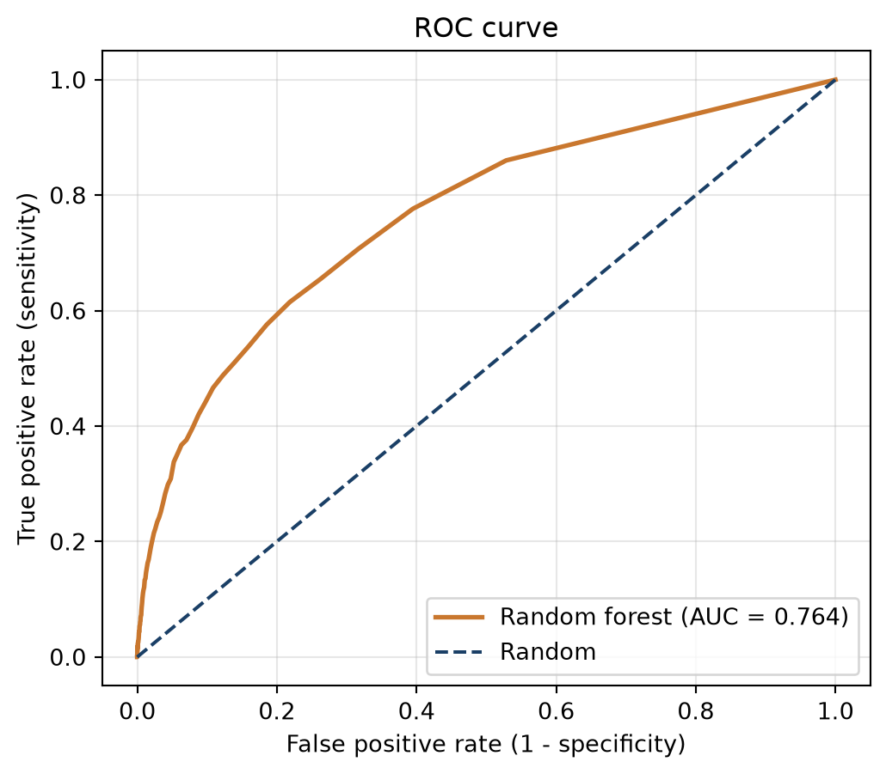
The random forest model reaches an AUC of 0.764: pick a random churner and a random non-churner from the test set, and about 76% of the time the churner gets the higher score, comfortably better than the 0.5 a random classifier would get, but far from the 1.0 of a perfect one. Reading a single point off the curve makes the trade-off concrete: to catch 80% of churners (TPR = 0.8) this model needs a false positive rate of roughly 53%, more than half of all non-churners flagged along the way. That is exactly what AUC hides by summarising the whole curve: it judges the overall ranking ability, but any one operating point on that curve can still be a poor deal in business terms. AUC’s single-number convenience has a deeper, well-documented catch too: it implicitly weighs misclassification costs differently for different classifiers, which can make it favour the wrong model when two classifiers are compared, and can lead to suboptimal model selection in terms of actual profit (Verbraken et al. 2013). That critique is beyond the scope of this book, but worth knowing the number isn’t as theoretically clean as it looks.
On strongly imbalanced data, ROC/AUC can be misleading too, even producing overly optimistic results. Since the false positive rate has a huge true-negative denominator, so it stays low even when the model is producing many false alarms in absolute terms (Van Belle et al. 2022). The precision–recall (PR) curve ignores true negatives entirely and focuses on the minority class. Its summary number, average precision (AP) or area under the PR curve (AUC-PR), is the PR curve’s alternative to AUC. Note that a random classifier’s AP equals the positive rate in the test set (its “no-skill” baseline).
from sklearn.metrics import precision_recall_curve, average_precision_score
precision, recall, _ = precision_recall_curve(y_te, y_proba)
ap = average_precision_score(y_te, y_proba)
no_skill = y_te.mean()
plt.figure(figsize=(6, 5))
plt.plot(recall, precision, color="#c9772e", lw=2, label=f"Random forest (AP = {ap:.3f})")
plt.axhline(no_skill, color="#1a3f66", lw=1.5, ls="--", label=f"No-skill baseline ({no_skill:.3f})")
plt.xlabel("Recall")
plt.ylabel("Precision")
plt.title("Precision-recall curve")
plt.legend(loc="upper right")
plt.grid(alpha=0.3)
plt.show()
print(f"AUC = {auc:.3f} vs AP = {ap:.3f} (no-skill AP = {no_skill:.3f})")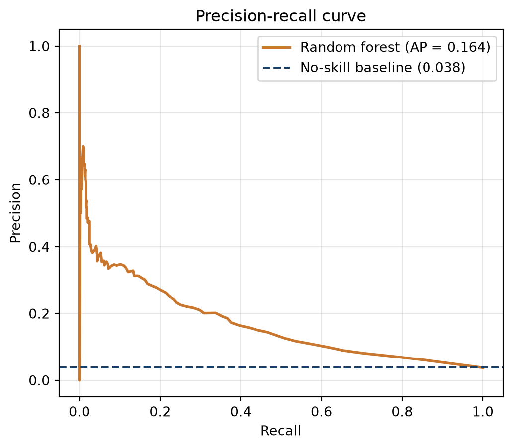
AUC = 0.764 vs AP = 0.164 (no-skill AP = 0.038)The gap tells the story: an AUC of ~0.76 sounds healthy, but the AP of ~0.16, against a no-skill baseline of ~0.04, is a more realistic read of how the model does at actually pinpointing churners.
A workable decision rule for imbalanced problems is to look at both curves. If the ROC curves don’t cross, pick the dominant one on AUC. If they cross, or the AUC gap is small (under ~0.02), fall back to AP and the PR curves instead, since that ambiguous case is exactly where ROC/AUC’s optimism on imbalanced data can hide a real difference between models.
Here it is in practice, comparing random forest against logistic regression:
from sklearn.linear_model import LogisticRegression
lr = Pipeline([
("scaler", StandardScaler()),
("classifier", LogisticRegression(random_state=RANDOM_STATE, max_iter=1000)),
]).fit(X_tr, y_tr)
rf_proba = y_proba
lr_proba = lr.predict_proba(X_te)[:, 1]
fig, axes = plt.subplots(1, 2, figsize=(13, 5))
for name, p, color in [("Random forest", rf_proba, "#2f6faa"), ("Logistic regression", lr_proba, "#c9772e")]:
f, t, _ = roc_curve(y_te, p)
axes[0].plot(f, t, color=color, lw=2, label=f"{name} (AUC = {roc_auc_score(y_te, p):.3f})")
pr_p, pr_r, _ = precision_recall_curve(y_te, p)
axes[1].plot(pr_r, pr_p, color=color, lw=2, label=f"{name} (AP = {average_precision_score(y_te, p):.3f})")
axes[0].plot([0, 1], [0, 1], "k--", alpha=0.5)
axes[0].set(xlabel="False positive rate", ylabel="True positive rate", title="ROC")
axes[0].legend(loc="lower right"); axes[0].grid(alpha=0.3)
axes[1].axhline(no_skill, color="gray", ls="--", alpha=0.7)
axes[1].set(xlabel="Recall", ylabel="Precision", title="Precision-recall")
axes[1].legend(loc="upper right"); axes[1].grid(alpha=0.3)
plt.tight_layout()
plt.show()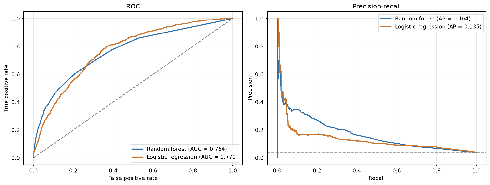
The AUCs are clsoe to each other and the ROC curves cross, exactly the ambiguous case the rule above is for. Falling back to AP settles the discussion: random forest’s AP is clearly higher, so it’s the pick.
The final call is still a business decision. A high-precision strategy (few, high-confidence targets) suits a small retention budget; a high-recall strategy (catch as many churners as possible, tolerate false alarms) suits a case where losing a customer is very costly; a balanced strategy optimises F1 or ideally creates an explicit cost matrix tailored to the specific business context (Verbeke et al. 2012; Verbraken et al. 2013).
Retention campaigns rarely contact everyone: budgets are limited, so in practice a campaign targets a fixed slice of the customer base, sorted by score, from the most likely churners down. Lift measures how much better than random that targeting is and is especially useful for evaluating the effectiveness of a model in identifying high-risk customers or for guiding retention campaigns. Linking back to the confusion matrix, it is precision divided by the overall churn rate (De Caigny et al. 2018):
\[ \text{Lift} = \frac{TP / (TP + FP)}{(TP + FN) / (TP + TN + FP + FN)} \]
The numerator is precision at that cut-off: of the customers targeted, how many actually churn. The denominator is the base rate: how many would churn if targeted at random. A lift of 1 means the targeted slice is no more concentrated in churners than the population as a whole, the model adds nothing; a lift of 3 means it is three times as concentrated.
The top-decile lift (TDL), the lift at the cut-off that flags exactly the top 10% of customers by score, is the most common single-number version in practice. Ten percent isn’t mathematically special: Neslin et al. (2006) showed that a retention campaign’s expected profit is a direct, increasing function of lift, which is why (top-decile) lift became one of the most widely used performance criteria in churn prediction in the first place (Verbeke et al. 2012; De Caigny et al. 2018).
order = np.argsort(y_proba)[::-1]
top10 = order[: int(0.10 * len(y_te))]
top_decile_lift = y_te.iloc[top10].mean() / y_te.mean()
print(f"Top-decile lift: {top_decile_lift:.2f}x (baseline churn rate {y_te.mean():.1%})")Top-decile lift: 4.17x (baseline churn rate 3.8%)The interpretation is direct: at the top 10%, the model detects 4.17 times more churners than a random 10% of customers would, exactly the efficiency gain a limited retention budget is trying to get.
Fixing the cut-off at 10% by convention is still only a stand-in for whatever the real campaign size will be, and that choice matters more than it looks. In practice, lift curves should be compared directly: Verbeke et al. show two churn models whose lift curves cross, one has the better lift at the top 5%, the other at the top 10% (Verbeke et al. 2012). Picking a model on top-decile lift can therefore mean walking away with the wrong one if the real campaign only reaches the top 5%, or vice versa. Since expected profit is a direct function of lift at whatever fraction is actually used, the safe rule is to read lift at the fraction you genuinely intend to target, not at a fixed 10% by habit. Fully profit-driven metrics remove that guesswork by searching over every fraction directly (Verbraken et al. 2013), but that is beyond the scope of this book.
The cumulative lift curve extends the top decile lift to every possible campaign size, from the top 1% to the whole population: at each point it’s the cumulative churn rate among the highest-scored customers divided by the overall rate. It starts highest at the very smallest, most concentrated slice (lift of about 9 at the top 1% here), decays as more, less certain customers are added, and settles at 1 once the whole population is targeted, since targeting everyone is the same as targeting at random.
from sklearn_evaluation.plot import lift_curve
y_proba_2d = np.column_stack([1 - y_proba, y_proba])
plt.figure(figsize=(7, 4))
lift_curve(y_te, y_proba_2d)
plt.tight_layout()
plt.show()<Figure size 672x384 with 0 Axes>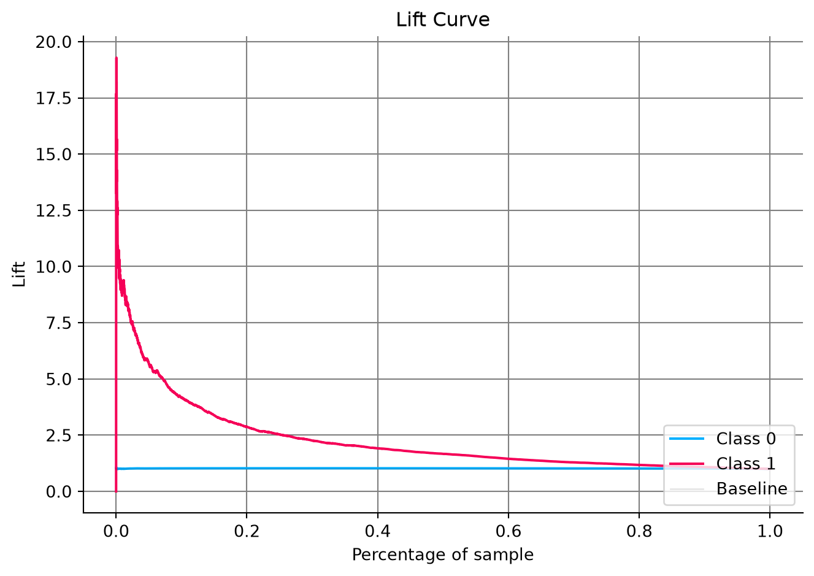
The cumulative gains chart is the lift curve’s close cousin, and the two are related by a simple identity. Both share the same x-axis: the fraction of customers targeted, sorted from the highest score down to the lowest, growing from the smallest slice to the whole population. Where they differ is what the y-axis counts. Lift is a ratio, how concentrated is this slice compared to random, so it starts high and decays toward 1 as more, less certain customers are added. Gains is a running total, how many churners have been captured so far, so it starts at 0% and climbs to 100% once everyone is included. The two are tied together exactly:
\[ \text{Gains}(x) = x \cdot \text{Lift}(x) \]
Working that out in terms of the confusion matrix at the cut-off that targets fraction \(x\) gives an even cleaner formula:
\[ \text{Gains}(x) = \frac{TP}{TP + FN} \]
That’s exactly recall. The cumulative gains chart is nothing more than recall traced across every possible cut-off instead of read at one fixed threshold: of all actual churners, what share are in the group targeted so far. Targeting a larger fraction \(x\) always trades a lower lift for a larger absolute share of churners caught. Targeting the top 10% here captures roughly 40% of all churners (\(0.10 \times 4.17 \approx 0.42\), the same top-decile lift computed above, just read as a running total instead of a ratio).
Let’s see that in action, and read the cumulative gains at 10% directly off the chart:
from sklearn_evaluation.plot import cumulative_gain
gains_at_10 = y_te.iloc[top10].sum() / y_te.sum()
print(f"Cumulative gains at 10%: {gains_at_10:.1%} of all churners captured")
plt.figure(figsize=(7, 4))
cumulative_gain(y_te, y_proba_2d)
plt.tight_layout()
plt.show()Cumulative gains at 10%: 41.7% of all churners captured<Figure size 672x384 with 0 Axes>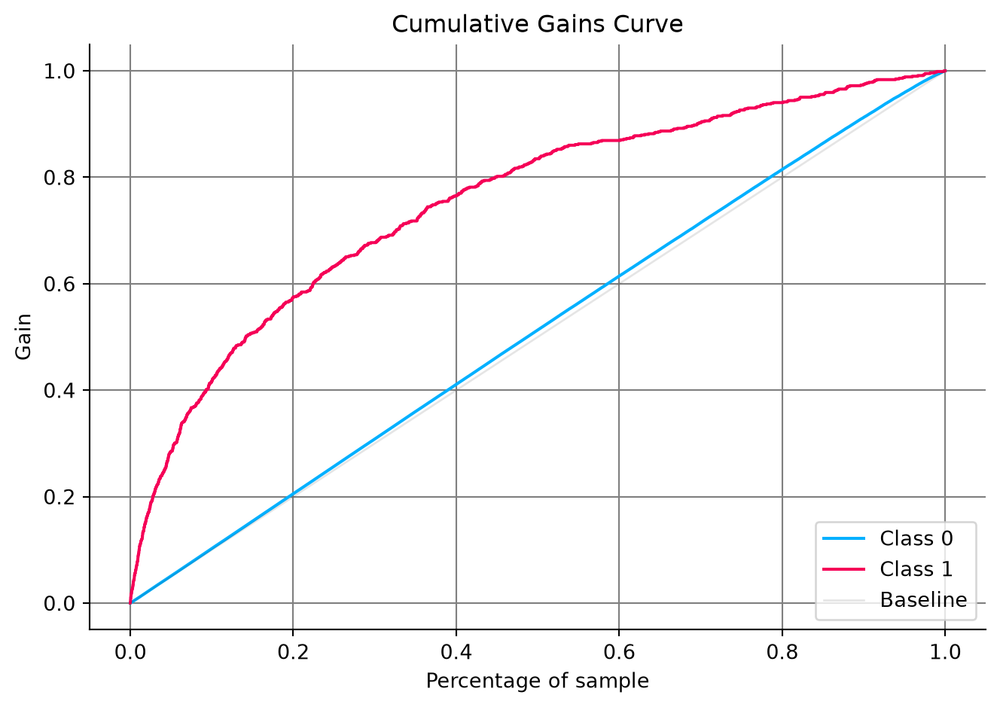
The Kolmogorov–Smirnov (KS) statistic measures how well the scores separate the two classes. It comes from a classic two-sample test: plot the cumulative distribution of scores separately for churners and for non-churners, and KS is the largest vertical gap between those two curves. Since TPR and FPR are themselves just those two cumulative distributions read from the top down, that same gap shows up on the ROC curve as max(TPR - FPR). Hence, it is the widest vertical distance between the ROC curve and the diagonal.
Let’s compute KS both ways and see that they agree:
from scipy.stats import ks_2samp
ks_scipy = ks_2samp(y_proba[y_te == 1], y_proba[y_te == 0]).statistic
fpr, tpr, thresholds = roc_curve(y_te, y_proba)
ks_idx = np.argmax(tpr - fpr)
ks_roc = (tpr - fpr)[ks_idx]
print(f"KS statistic (two score distributions): {ks_scipy:.4f}")
print(f"KS statistic (max TPR - FPR on the ROC curve): {ks_roc:.4f}")
print(f"Reached at threshold {thresholds[ks_idx]:.3f}")
fig, axes = plt.subplots(1, 2, figsize=(12, 5))
sns.ecdfplot(y_proba[y_te == 0], ax=axes[0], color="#2f6faa", label="No churn")
sns.ecdfplot(y_proba[y_te == 1], ax=axes[0], color="#c9772e", label="Churn")
axes[0].axvline(thresholds[ks_idx], color="gray", ls="--", lw=1)
axes[0].set(xlabel="Predicted score", ylabel="Cumulative proportion",
title="The two score distributions, and their widest gap")
axes[0].legend(loc="lower right")
axes[0].grid(alpha=0.3)
axes[1].plot(fpr, tpr, color="#2f6faa", lw=2, label=f"ROC (AUC = {auc:.3f})")
axes[1].plot([0, 1], [0, 1], "k--", alpha=0.5)
axes[1].vlines(fpr[ks_idx], fpr[ks_idx], tpr[ks_idx], color="#c9772e", lw=3,
label=f"KS = {ks_roc:.3f}")
axes[1].set(xlabel="False positive rate", ylabel="True positive rate",
title="The same gap, seen on the ROC curve")
axes[1].legend(loc="lower right")
axes[1].grid(alpha=0.3)
plt.tight_layout()
plt.show()KS statistic (two score distributions): 0.3963
KS statistic (max TPR - FPR on the ROC curve): 0.3963
Reached at threshold 0.050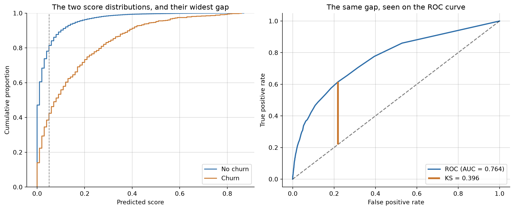
Both routes agree: KS = 0.396, reached at a score threshold of 0.05, the cut-off where the two classes are most cleanly separated. That’s a different threshold from the F1-optimal one found earlier (0.207): maximising separation and maximising F1 don’t have to agree. At this KS-optimal threshold the model would flag about 23% of customers as likely churners, noticeably more than the 10% a typical campaign budget allows, a reminder that “the threshold with the best statistical property” and “the threshold the business can actually act on” are two different questions.
As a rule of thumb: KS below 0.2 is poor separation, 0.2 to 0.4 acceptable, 0.4 to 0.75 good, and above 0.75 is either excellent or a sign of leakage worth investigating. At 0.396, this model sits right at the top of the acceptable band, just short of good.
We now have both sides of a trustworthy evaluation: an experimental setup that produces an honest test set, and metrics to score against it for regression and classification targets. The models used throughout this chapter, KNN and random forests, were deliberately treated as black boxes: useful for producing predictions to evaluate, not yet explained. The next chapter, Modeling, opens up the two workhorses instead, linear regression and logistic regression, including how regularization keeps them from overfitting, so you understand not just how to score a model but how the most widely used one actually works.